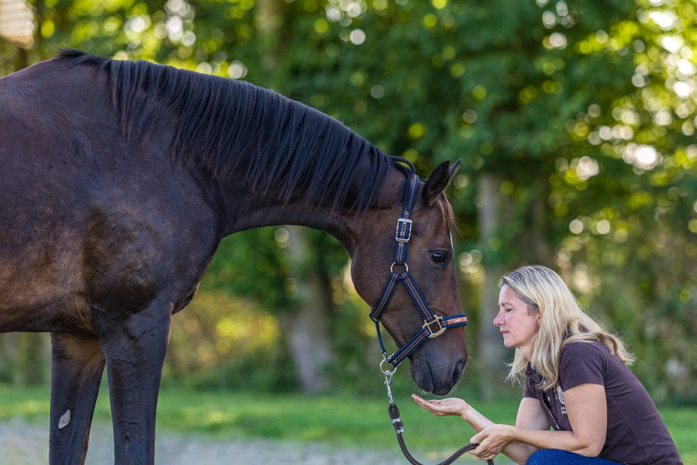

Über mich
Mein Werdegang

Ich bin Susanne Griese, Diplom-Ingenieurin und seit 2024 selbstständig als mobile Trainerin für tensegrales Training im Raum Braunschweig. Pferde begleiten mich seit über 40 Jahren – vom eigenen Zuchtstall bis zur Ausbildung als Horse Tensegrity Trainerin.
Bevor ich mein Herzensthema zum Beruf gemacht habe, war ich 25 Jahre im Volkswagen-Konzern tätig – vom Fachbereich bis ins Management. Aus dieser Zeit bringe ich mit, was auch in der Arbeit mit Pferd und Besitzer zählt: Verlässlichkeit, Struktur und ein klarer, analytischer Blick.
Stationen
-
Beruflicher Hintergrund
Diplom-Ingenieurin & 25 Jahre Volkswagen-Konzern
Studium zur Diplom-Ingenieurin für Ökologie und Umweltschutz, anschließend 25 Jahre in verschiedenen Funktionen bis ins Management. Prägend: Verlässlichkeit, Seriosität und strukturiertes Arbeiten.
-
Reiterliche Basis
Dressurreiterin bis Klasse L
Jahrzehnte im Dressursport, heute nicht mehr aktiv im Turniersport. Besitzerin und Züchterin eigener Pferde – meine beiden selbst gezogenen Stuten Granini und Finja habe ich bis zu den Lektionen der Klasse M ausgebildet.
-
seit 2023
Fortbildungen & Hospitationen
Kontinuierliche Weiterbildung online und in Präsenz in klassischer Handarbeit, Bodenarbeit, Langzügel, Doppellonge und Longenarbeit – u. a. bei der Hofreitschule Bückeburg und Babette Teschen. Dazu Kursteilnahmen und Hospitationen zum tensegralen Training.
-
seit 2024
Selbstständige mobile Trainerin
Start in die Selbstständigkeit: tensegrales Training vor Ort im Raum Braunschweig, mit Einzeltrainings, Kursen und Coaching-Paketen.
-
04/2025 – 2026
Zertifizierte Horse Tensegrity Trainerin
Ausbildung bei der Horse Tensegrity Training GmbH mit meinem Projektpferd Finja. Nach einem lehrreichen Jahr darf ich mich offiziell zertifizierte Horse Tensegrity Trainerin nennen.
-
Zusatzqualifikation
Zertifizierte MagnaWave-Praktikerin für Pferde und Hunde
Ausbildung zur PEMF-Magnetfeldtherapie mit dem MagnaWave Semi 10 – als ideale Ergänzung zum Körpertraining, für Pferde wie für Hunde.
Qualifikationen auf einen Blick
- Diplom-Ingenieurin für Ökologie und Umweltschutz
- 25 Jahre Berufserfahrung im Volkswagen-Konzern (bis ins Management)
- Dressurreiterin bis Klasse L (nicht mehr aktiv im Turniersport), Besitzerin und Züchterin eigener Pferde
- Zertifizierte Horse Tensegrity Trainerin (Horse Tensegrity Training GmbH)
- Zertifizierte MagnaWave-Praktikerin für Pferde und Hunde
- Fortbildungen in klassischer Handarbeit, Bodenarbeit, Langzügel, Doppellonge und Longenarbeit – u. a. bei der Hofreitschule Bückeburg und Babette Teschen